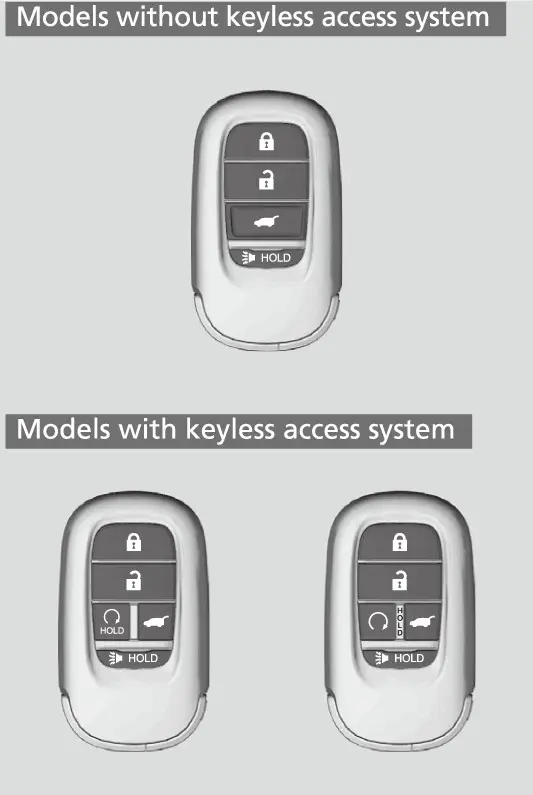
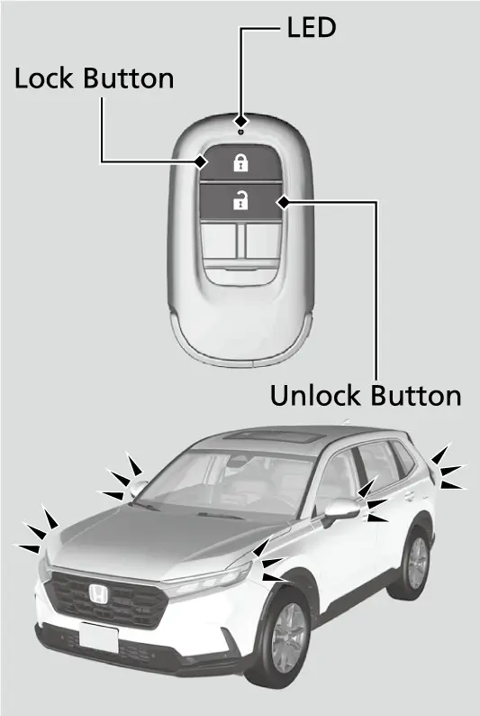
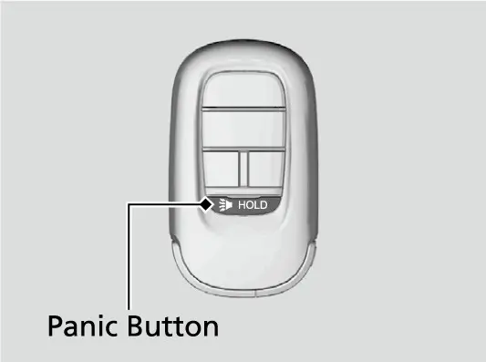
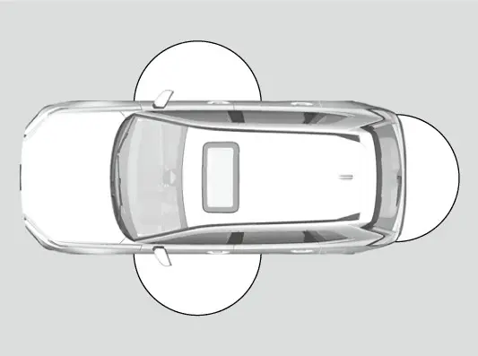
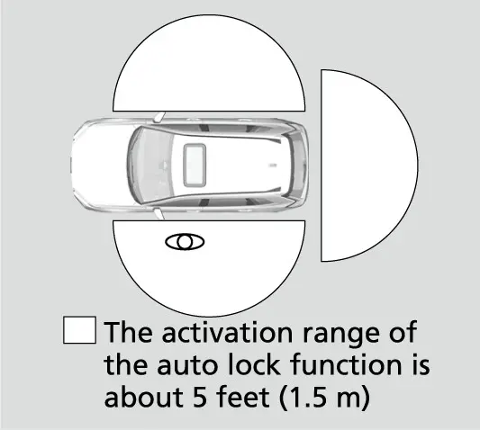
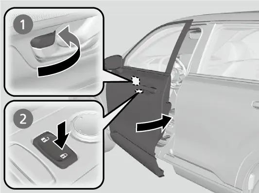
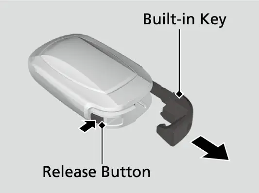
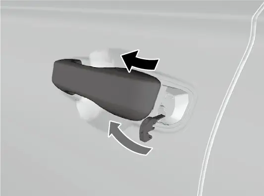
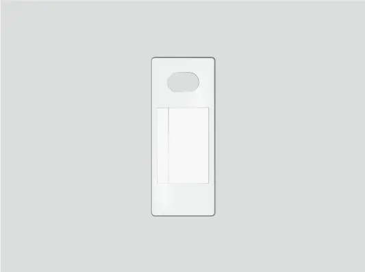

קאפיטל 21
דער שליסל-פאב און זיכערהייט
זייטן 333–345 אינעם PDF
דער קיילעס רימאוט (פאב)
אייער EX קומט מיט keyless remotes (שליסל-לאזע רימאוטס). לויט דעם אונער'ס מאנואל ניצט מען דעם keyless remote צו אנצינדן און אפשטעלן דעם מאטאר, און צו לאקן און אנלאקן אלע טירן, דעם טעילגעיט און דאס בענזין-טירל. יעדער שליסל האט אויך אין זיך אן immobilizer (אנטי-גנבה) טשיפ, וואס העלפט שוצן קעגן גנבה. מען רעדט דערפון שפעטער אין דעם קאפיטל.

גייט איידל אום מיטן פאב. האלט אים נישט אין דירעקטע זון, און ווייט פון הויכע היץ און הויכע פייכטקייט. לאזט אים נישט פאלן און לייגט נישט קיין שווערע זאכן אויף אים. האלט אים ווייט פון פליסיגקייטן, שטויב און זאמד, און נעמט אים נישט פונאנדער, סיידן צו טוישן די באטעריע. אויב זיינע סירקיטס ווערן געשעדיגט, קען זיין אז דער מאטאר וועט זיך נישט אנצינדן און דער רימאוט וועט אויפהערן ארבעטן. אויב דער פאב מאכט אמאל פראבלעמען, לאזט אים איבערקוקן ביי א דילער.
ניצן די קנעפלען אויפן רימאוט
לאקן און אנלאקן
דריקט lock (לאקן) איין מאל. געוויסע אויסערליכע לייכטן בלינקען, אלע טירן, דער טעילגעיט און דאס בענזין-טירל לאקן זיך, און דער סעקיוריטי סיסטעם שטעלט זיך אן. דריקט lock א צווייטע מאל אין משך פון פינף סעקונדעס נאכן ערשטן דרוק, און דער ביפער לאזט זיך הערן צו באשטעטיגן אז דער סעקיוריטי סיסטעם איז אנגעשטעלט.
דריקט unlock (אנלאקן) איין מאל, און געוויסע אויסערליכע לייכטן בלינקען צוויי מאל, בשעת נאר דער דרייווער'ס טיר און דאס בענזין-טירל עפענען זיך. דריקט unlock נאכאמאל צו אנלאקן די איבעריגע טירן און דעם טעילגעיט. אויב קיינער עפנט נישט קיין טיר אדער דעם טעילגעיט אין משך פון 30 סעקונדעס נאכן אנלאקן, לאקט זיך אלעס צוריק אויטאמאטיש.

אויב דער שאלטער פון די אינעווייניגע לייכטן איז אויף דער פאזיציע וואס ארבעט מיט די טירן, צינדט זיך אן די אינעווייניגע ליכט ווען איר אנלאקט. אויב קיין טיר עפנט זיך נישט, ווערט די ליכט פאמעלעך אויסגעלאשן נאך 30 סעקונדעס. אויב דער קאר לאקט זיך צוריק, לעשט זיך די ליכט גלייך אויס.
קורצער איבערבליק פון די רימאוט קנעפלען
| קנעפל | דרוק | רעזולטאט |
|---|---|---|
| Lock | איין מאל | לייכטן בלינקען, אלעס לאקט זיך, סעקיוריטי סיסטעם שטעלט זיך אן |
| קנעפל | דרוק | רעזולטאט |
|---|---|---|
| Lock | נאכאמאל אין משך פון 5 סעקונדעס | ביפער באשטעטיגט אז דער סעקיוריטי סיסטעם איז אנגעשטעלט |
| Unlock | איין מאל | לייכטן בלינקען צוויי מאל; דרייווער'ס טיר און בענזין-טירל עפענען זיך |
| Unlock | צוויי מאל | די איבעריגע טירן און דער טעילגעיט עפענען זיך |
| Panic | האלטן בערך 1 סעקונדע | הארָן און לייכטן פאר בערך 30 סעקונדעס |
| Engine start | Lock, דערנאך האלטן כאטש 1 סעקונדע | דער מאטאר צינדט זיך אן פון דער ווייטנס |
דער פאניק קנעפל
דער דריטער קנעפל איז panic (פאניק/ נויט). האלט אים בערך איין סעקונדע, און דער הארָן טוט א פייף און געוויסע אויסערליכע לייכטן בלינקען פאר בערך 30 סעקונדעס. Panic mode (פאניק מאדָע) ציט אויפמערקזאמקייט, און ער קען אייך אויך העלפן געפינען דעם קאר אין א גרויסן פארקינג לאט. צו אפשטעלן, דריקט סיי וועלכן קנעפל אויפן רימאוט, אדער שטעלט דעם power mode אויף ON. אויב איר האט צופעליג געדריקט panic, וועט א שנעלער דרוק אויף סיי וועלכן קנעפל עס גלייך אפשטעלן.

סטארטן דעם מאטאר פון דער ווייטנס
דער פערטער קנעפל איז remote engine start (סטארטן דעם מאטאר פון דער ווייטנס). Honda'ס ספעציפיקאציעס שרייבן אז דאס איז סטאנדארט אויף דעם EX, אבער נישט אויף דעם LX. Honda'ס פיטשער גייד גיט די פאלגנדע סדר.
סטארטן דעם מאטאר פון דער ווייטנס
- שטייט מיטן פאב נישט ווייטער ווי בערך 100 פיס פונעם קאר.
- דריקט דעם LOCK קנעפל אויפן פאב.
- דריקט און האלט דעם ENGINE START קנעפל כאטש איין סעקונדע. דער מאטאר צינדט זיך אן, און די אויטאמאטישע קליימעט קאנטראל הייבט אן צוצוגרייטן דעם קאר אינעווייניג צו 72°F.
- ווען איר קומט צום קאר, שטייגט אריין ווי געווענליך. דער מאטאר ארבעט ווייטער.
- צו פארן, דריקט דעם ברעמז פעדאל און דריקט איין מאל דעם ENGINE START/STOP קנעפל אויפן דעשבארד. די אינסטרומענטן צינדן זיך אן, און דער קאר איז גרייט צו פארן.
Smart Entry (אריינקומען אן א שליסל)
Smart Entry איז וואס דער מאנואל רופט דעם keyless access system (סיסטעם צו אריינקומען אן א שליסל). ער לאזט אייך לאקן און אנלאקן דעם קאר בשעת דער פאב בלייבט אין אייער קעשענע. Honda'ס פיטשער גייד שרייבט אים פאר דעם EX און העכער. ער ארבעט ביז בערך 32 אינטשעס (80 cm) פון אן אויסערליכן טיר-האנטל אדער פונעם אויסערליכן האנטל פונעם טעילגעיט. אפילו אין דעם ראיאן קען ער נישט ארבעטן אויב דער פאב איז אסאך העכער אדער נידעריגער פונעם האנטל, אדער צוגעדריקט גלייך צו דער טיר, צום גלאז אדער צום טעילגעיט. פונקט ווי די רימאוט קנעפלען, ארבעט ער נאר אין VEHICLE OFF.

לאקן און אנלאקן מיט Smart Entry
צו לאקן, טאפט אן דעם door lock sensor (לאק-סענסאר) אויף א פארנטיגן טיר-האנטל, אדער דריקט דעם לאק קנעפל אויפן טעילגעיט. אלע טירן און דער טעילגעיט לאקן זיך, און דער סעקיוריטי סיסטעם שטעלט זיך אן. געוויסע אויסערליכע לייכטן בלינקען איין מאל און דער ביפער לאזט זיך הערן איין מאל.
צו אנלאקן, כאפט אן א האנטל. יעדעס מאל אנלאקן גיט צוויי בלינקען און צוויי ביפס. אויב מען עפנט גארנישט אין משך פון 30 סעקונדעס, לאקט זיך אלעס צוריק.
אנלאקן מיט Smart Entry
| וועלכן האנטל איר כאפט אן אדער דריקט | וואס עפנט זיך |
|---|---|
| דרייווער'ס טיר-האנטל | די דרייווער'ס טיר און דאס בענזין-טירל |
| פארנטיגער פאסאזשיר'ס טיר-האנטל | אלע טירן און דער טעילגעיט |
| אויסערליכער טעילגעיט האנטל | דער טעילגעיט (אויפן EX הייבט מען אים מיט דער האנט) |
פראקטישע פונקטן
נאכן לאקן האט איר ביז 2 סעקונדעס צו ציען דעם האנטל און זיך איבערצייגן אז די טיר איז געלאקט. אויב איר דארפט אנלאקן גלייך נאכן לאקן, ווארט כאטש 2 סעקונדעס איידער איר כאפט אן דעם האנטל, אנדערש וועט די טיר נישט ענטפערן. אויב א טיר עפנט זיך נישט ביים ערשטן ציען, כאפט נאכאמאל אן דעם האנטל, איבערצייגט זיך אז זי האט זיך אנגעלאקט, און דערנאך ציט.
- הענטשיך קענען מאכן אז די האנטל-סענסארס זאלן פאמעלעך ענטפערן, אדער בכלל נישט ענטפערן.
- שטארקער רעגן אדער א קאר וואש וואס דעקט צו דעם האנטל קען אנלאקן די טיר אויב דער פאב איז אין ראיאן.
- ווישט אפ פון די טיר-הענטלעך רעשטלעך פון קאר שאמפו, ערד-וואסער אדער אנטיפריז, ווייל דאס קען שטערן דעם סיסטעם.
- יעדער וואס טראגט א פאב קען לאקן און אנלאקן דעם קאר, אפילו ווען איר טראגט נישט אייערן.
- לאזט נישט איבער דעם פאב אין קאר ווען איר גייט ארויס; נעמט אים מיט.
- די בלינקען, ביפס און דער מאדָע פון אנלאקן די טירן קען מען אויסשטעלן אין Vehicle Settings (קאר-איינשטעלונגען) אויפן מיטער.
Walk Away Auto Lock
Walk Away Auto Lock (אויטאמאטיש לאקן ווען מען גייט אוועק) לאקט פאר אייך דעם קאר ווען איר גייט אוועק. גייט ארויס מיטן פאב און פארמאכט אלע טירן און דעם טעילגעיט בשעת איר זענט נישט ווייטער ווי בערך 5 פוס (1.5 m) פון א האנטל. איין ביפ מיינט אז auto lock איז גרייט. גייט ווייטער ווי בערך 5 פוס און בלייבט אויסער דעם ראיאן 2 סעקונדעס אדער מער. געוויסע אויסערליכע לייכטן בלינקען, דער ביפער לאזט זיך הערן, און אלע טירן, דער טעילגעיט און דאס בענזין-טירל לאקן זיך.

אויב איר בלייבט שטיין לעבן קאר אין ראיאן, לאקט ער זיך בערך 30 סעקונדעס נאכן ביפ. ביז ער לאקט זיך, בלינקט ווייטער דער אינדיקאטאר אויף אייער פאב. עפענען סיי וועלכע טיר אדער דעם טעילגעיט נאכן ביפ מאכט בטל דעם auto lock.
אנצינדן די פונקציע
Auto lock איז OFF פון דער פאבריק. מען צינדט אים אן דורך Vehicle Settings אויפן driver information interface (דרייווער אינפארמאציע סקרין), וואס איז דער 7-אינטש מיטער דיספליי (A-type meter) אין אייער EX. קאפיטל 6 ערקלערט ווי אזוי מען גייט אדורך די מיטער מעניוס. Honda'ס פיטשער גייד ווייזט אויך EX אייגנטימער צו א how-to ווידעא פאר דעם שריט.
ווען auto lock ארבעט נישט
- דער פאב איז אינעווייניג אין קאר (קיין ביפ לאזט זיך נישט הערן).
- א טיר, דער טעילגעיט אדער די האוד איז אפן.
- דער power mode איז נישט OFF.
- דער פאב איז נישט געווען אין בערך 5 פוס ווען איר האט פארמאכט.
- איר האט ארויסגעטראגן דעם פאב פונעם ראיאן איידער אלעס איז געווען פארמאכט (א ביפ לאזט אייך וויסן).
נאכדעם וואס auto lock איז גרייט, לאזט זיך הערן א stop beeper (אפשטעל-ביפ) פאר בערך צוויי סעקונדעס אויב דער פאב קומט צוריק אין קאר דורך א פענצטער, אויב מען לייגט אים אריין אינעם טעילגעיט ראיאן, אדער אויב איר שטייט צו נאנט צום קאר. אויב איר הערט עס, טשעקט אז איר טראגט דעם פאב, דערנאך עפנט און פארמאכט א טיר און הערט זיך צו צום איינציגן ביפ.
אויסלעשן אויף א צייט
אמאל ווילט איר auto lock אויסגעלאשן פאר א שטיק צייט, למשל בשעת איר לאדנט אן דעם קאר אין אייער דרייוועי.
אויסלעשן Walk Away Auto Lock אויף א צייט
- שטעלט דעם power mode אויף OFF.
- עפנט די דרייווער'ס טיר.
- אויפן master door lock switch (הויפט לאק-שאלטער) דריקט Lock, Unlock, Lock, Unlock.
- דער ביפער לאזט זיך הערן, און די פונקציע איז אויסגעלאשן.
יעדע איינע פון די פאלגנדע זאכן ברענגט עס צוריק: שטעלן דעם power mode אויף ON, לאקן דעם קאר אן auto lock, אוועקגיין פונעם ראיאן מיטן פאב ביי זיך, אדער עפענען סיי וועלכע טיר.
Lock presetting
Lock presetting (פאר-לאקן) לאזט אייך ערשט לאקן און שפעטער פארמאכן. נאכן פארמאכן די דרייווער'ס טיר, טאפט אן איר לאק-סענסאר, דריקט דעם טעילגעיט לאק קנעפל, אדער דריקט lock אויפן פאב. א סיגנאל לאזט זיך הערן, און presetting איז אקטיוו. דערנאך פארמאכט די איבעריגע טירן און דעם טעילגעיט. געוויסע אויסערליכע לייכטן בלינקען און דער ביפער לאזט זיך הערן ווען דער קאר לאקט זיך. אויב א טיר אדער דער טעילגעיט עפנט זיך פאר'ן ענדיגן לאקן, ווערט presetting אויסגעלאשן. איבערצייגט זיך אז דער שליסל איז נישט אינעווייניג, און אז דער קאר איז געלאקט איידער איר גייט אוועק. די פונקציע קען מען אנצינדן אדער אויסלעשן אין Vehicle Settings.
לאקן פון אינעווייניג און אויטאמאטישע לאקס
ווען איר לאקט די דרייווער'ס טיר, לאקן זיך אין דער זעלבער צייט אלע אנדערע טירן, דער טעילגעיט און דאס בענזין-טירל. מען קען אויך לאקן אן דעם שליסל. ביי א פארנטיגער טיר, שטופט דעם לאק-טאב פאראויס אדער דריקט דעם master door lock switch צו לאקן, דערנאך פארמאכט די טיר. ביי א הינטערשטער טיר, שטופט איר לאק-טאב פאראויס און פארמאכט זי.

Lockout protection
אייער EX האט אויך lockout protection (שוץ פון זיך פארשליסן אינדרויסן). אויב דער קאר קען נישט דערקענען דעם פאב, לאזט זיך הערן דער ביפער, געוויסע אויסערליכע לייכטן בלינקען, די טירן עפענען זיך, און א מעלדונג באווייזט זיך אויפן מיטער. אזוי קענט איר צוריק אריין אויב דער פאב איז נאך אינעווייניג. אויב קיין טיר עפנט זיך נישט, לאקט זיך אלעס צוריק נאך 15 סעקונדעס. כדי עס זאל נישט פעלן ביים דערקענען, האלט דעם פאב ווייט פון סעל פאונס און אנדערע מכשירים וואס קענען שטערן דעם סיגנאל. די lockout protection איינשטעלונג קען מען טוישן אין Vehicle Settings.
אויטאמאטיש לאקן און אנלאקן די טירן
דער קאר לאקט און אנלאקט זיך אויך אליין. אין drive lock mode (לאקן ביים פארן) לאקן זיך אלע טירן און דער טעילגעיט ווען דער קאר דערגרייכט בערך 10 mph (15 km/h). אין driver's door open mode (עפענען מיט דער דרייווער'ס טיר) עפנט זיך אלעס ווען איר עפנט די דרייווער'ס טיר. מען קען די אויסלעשן אדער אויסקלייבן אן אנדערע איינשטעלונג דורך Vehicle Settings אויפן מיטער דיספליי. דער מאנואל רעכנט נישט אויס די אנדערע אפציעס דא, דעריבער טשעקט אינעם מעניו אליין.
קינדער-לאקס אויף די טירן
פאר קינדער אויפן הינטערשטן זיץ, ניצט די childproof locks (קינדער-לאקס). שיבט דעם לעווער אין יעדער הינטערשטער טיר צו דער לאק פאזיציע און פארמאכט די טיר. יעצט וועט די טיר זיך נישט עפענען פון אינעווייניג, ווי אזוי עס זאל נאר שטיין דער לאק-טאב. מען עפנט זי מיטן אויסערליכן האנטל.
אויב איר זיצט הינטן מיטן קינדער-לאק אנגעשטעלט און דארפט ארויס, שטעלט דעם לאק-טאב אויף unlock, לאזט אראפ דאס הינטערשטע פענצטער, שטרעקט אויס די האנט, און ציט דעם אויסערליכן טיר-האנטל.
Immobilizer
Der immobilizer (אנטי-גנבה סיסטעם) לאזט נישט א שליסל וואס איז נישט רעגיסטרירט צו אייער קאר אנצינדן דעם מאטאר. כדי ער זאל זיכער לייענען אייער שליסל ווען איר דריקט דעם ENGINE START/STOP קנעפל, פאלגט די כללים פונעם מאנואל.
- האלט מכשירים וואס שיקן שטארקע ראדיא כוואליעס ווייט פונעם ENGINE START/STOP קנעפל.
- לאזט נישט דעם שליסל זיין צוגעדעקט מיט מעטאל אדער אנרירן א מעטאלענע זאך.
- ברענגט נישט נאנט צום קנעפל דעם immobilizer שליסל פון אן אנדערן קאר.
- האלט דעם שליסל ווייט פון מאגנעטישע זאכן; אפילו א שליסל-קייט קען ווערן מאגנעטיש.
- טוישט קיינמאל נישט דעם סיסטעם און לייגט נישט צו קיין מכשירים, ווייל דאס קען מאכן אז דער קאר זאל נישט קענען פארן.
- נעמט שטענדיג מיט דעם שליסל ווען איר פארלאזט דעם קאר; א שליסל וואס בלייבט אינעווייניג לאדנט איין גנבה אדער אז דער קאר זאל זיך צופעליג באוועגן.
דער סעקיוריטי אלארם
ווי אזוי ער שטעלט זיך אן
דער אלארם שטעלט זיך אן אליין; עס איז נישטא קיין באזונדערער קנעפל דערפאר. די אלע באדינגונגען מוזן זיין:
- דער power mode איז VEHICLE OFF.
- די האוד איז פארמאכט.
- אלע טירן און דער טעילגעיט זענען געלאקט פון אינדרויסן מיטן רימאוט אדער Smart Entry.
ווען דער אלארם שטעלט זיך אן, הייבט אן בלינקען דער security system alarm indicator (אלארם אינדיקאטאר) אויפן אינסטרומענט פאנעל. נאך בערך 15 סעקונדעס טוישט זיך דער טעמפא פונעם בלינקען. דער אינדיקאטאר איז אייער באשטעטיגונג. צו אויסלעשן, לאקט אן מיטן רימאוט אדער Smart Entry, אדער שטעלט דעם power mode אויף ON. דער אינדיקאטאר לעשט זיך אויס אין דער זעלבער צייט.
ווען ער גייט לאס
אויב עמיצער עפנט מיט געוואלט א טיר, די האוד אדער דעם טעילגעיט, פייפט דער הארָן מיט איבעררייסן און געוויסע אויסערליכע לייכטן בלינקען ביז צוויי מינוט. עפענען א טיר אדער דעם טעילגעיט מיטן רימאוט אדער Smart Entry לאזט אים נישט לאס. שטעלט אפ דעם אלארם דורך אנלאקן מיטן רימאוט אדער Smart Entry, אדער דורך שטעלן דעם power mode אויף ON.
אויב די 12-וואלט באטעריע שטארבט בשעת דער אלארם איז אנגעשטעלט, קען דער אלארם לאסגיין נאכדעם וואס מען טשארדזשט אדער טוישט די באטעריע. לאקט אן מיטן רימאוט אדער Smart Entry צו אים אפשטעלן. קאפיטל 20 רעדט וועגן דער 12-וואלט באטעריע.
רימיינדערס פונעם keyless remote
צוויי רימיינדערס היטן אייך אז איר זאלט נישט אוועקגיין מיטן פאב. לאמיר זאגן דער power mode איז נישט OFF און איר נעמט ארויס דעם פאב און פארמאכט די טיר. אין ACCESSORY לאזט זיך הערן אן אלארם אינדרויסן פונעם קאר. אין ON לאזט ער זיך הערן אינעווייניג און אינדרויסן, און א ווארענונגס-אינדיקאטאר באווייזט זיך אויפן אינסטרומענט פאנעל. די ווארענונג הערט אויף ווען דער פאב איז צוריק אין ראיאן און אלע טירן זענען פארמאכט. דורכגעבן דעם פאב דורך א פענצטער לאזט נישט לאס דעם באזער.
ווען דער מאטאר ארבעט שוין אן דעם פאב, קען מען נישט טוישן power modes און נישט צוריק אנצינדן דעם מאטאר. עפענען די דרייווער'ס טיר אין ACCESSORY לאזט אויך לאס א ווארענונגס-ביפ. אויב איר לאזט איבער דעם קאר 30 ביז 60 מינוט אין P מיטן power mode אין ACCESSORY, טוישט ער זיך אויטאמאטיש צו א מאדָע ענליך צו VEHICLE OFF כדי צו שוצן די באטעריע. האלט נישט דעם פאב אויפן דעשבארד, אין גלאוו באקס אדער אין א סטארעדזש באקס. דער קאר קען אים דארט נישט דערקענען, און דער באזער קען לאסגיין.
סיגנאל שטערונגען און באטעריע לעבן
דער קאר געפינט דעם פאב דורך ראדיא, דעריבער זענען שטערונגען וויכטיג. דער מאנואל זאגט אז סטארטן און לאקן קען נישט ארבעטן אדער ווערן אומשטאביל נעבן מכשירים וואס שיקן שטארקע ראדיא כוואליעס, ווען איר טראגט דעם פאב צוזאמען מיט טעלעפאנען, לעפטאפס אדער אנדערע ווייערלעס מכשירים, אדער ווען מעטאל רירט אן אדער דעקט צו דעם פאב.
די פאב באטעריע לעבט בערך צוויי יאר, לויט ווי אפט איר ניצט אים. שטארקע ראדיא סיגנאלן ליידיגן אויס די באטעריע שנעלער, דעריבער האלט נישט דעם פאב לעבן א טעלעוויזיע אדער קאמפיוטער.
שליסל באטעריע טוישן
ווען דער ראיאן ווערט קלענער אדער טוישט זיך, מיינט עס אז די באטעריע ווערט שוואך. אויב דער אינדיקאטאר אויפן פאב צינדט זיך נישט אן ווען איר דריקט א קנעפל, איז די באטעריע טויט און מען דארף זי טוישן. עס איז א CR2032 קוילעכדיגע באטעריע, וואס מען פארקויפט אין סטארס און ביי דילערס.
טוישן די באטעריע פונעם keyless remote
- נעמט ארויס דעם built-in key.
- מיט די קנעפלען אראפ, הייבט פארזיכטיג אפ די אויבערשטע העלפט פונעם דעקל ביים שפאלט, מיטן האנטל פונעם שליסל איינגעוויקלט אין א טוך כדי עס זאל נישט קראצן.
- הייבט ארויס די אלטע באטעריע ביים ראנד מיט א קליינעם פלאכן שרויבנציער, אויך איינגעוויקלט אין א טוך.
- לייגט אריין די נייע באטעריע מיט דער ריכטיגער פאלאריטעט, אין דער זעלבער ריכטונג ווי די אלטע.
- קנאקט צו דעם דעקל, לייגט צוריק דעם built-in key, און פרובירט לאקן און אנלאקן.
ווען דער פאב ארבעט נישט
דער אינעווייניגסטער שליסל
דער built-in key (אינעווייניגסטער שליסל) איז אייער רעזערוו ווען די פאב באטעריע איז שוואך. דריקט דעם release button (ארויסלאז קנעפל) אויפן פאב און ציט ארויס דעם שליסל. צו אים צוריקלייגן, שטופט אים אריין ביז ער קנאקט. דער מאנואל זאגט אים צו ניצן ווען דער פאב קען שוין נישט אנלאקן די טירן, למשל אויף א קאלטן פרימארגן ווען די באטעריע גיבט סוף כל סוף אויף.

די שליסל-לאך איז באהאלטן הינטער דעם דרייווער'ס טיר-האנטל. ציט און האלט דעם אויסערליכן האנטל, לייגט אריין דעם שליסל אינעם צילינדער פון אונטערן האנטל, און דרייט אים. נאר די דרייווער'ס טיר עפנט זיך, און א צווייטער דריי אין משך פון עטליכע סעקונדעס וועט נישט עפענען די אנדערע. אויב דער אלארם איז געווען אנגעשטעלט, וועט ער לאסגיין. שטייגט אריין און שטעלט דעם power mode אויף ON צו אים אפשטעלן.

סטארטן מיט א שוואכן פאב
א שוואכער פאב קען נאך אלץ אנצינדן דעם קאר. די סימנים זענען א ביפ, די מיטער מעלדונג "To start, touch start button with emblem side of remote" (צו סטארטן, טאפט אן דעם סטארט קנעפל מיט דער עמבלעם-זייט פונעם רימאוט), א בלינקנדיגער ENGINE START/STOP קנעפל, און א מאטאר וואס צינדט זיך נישט אן.
סטארטן דעם מאטאר מיט א שוואכער פאב באטעריע
- דריקט דעם ENGINE START/STOP קנעפל. דער ביפער לאזט זיך הערן, און דער קנעפל בלינקט בערך 30 סעקונדעס.
- בשעת ער בלינקט, טאפט אן די מיטן פונעם קנעפל מיטן H לאגא אויפן פאב, מיט די קנעפלען צו אייך.
- דער ביפער לאזט זיך הערן, און דער קנעפל בלייבט אנגעצונדן בערך 10 סעקונדעס.
- בשעת ער איז אנגעצונדן, דריקט דעם ברעמז פעדאל און דריקט דעם קנעפל. דער מאטאר צינדט זיך אן. אויב איר דריקט נישט דעם ברעמז, גייט דער קאר אנשטאט דעם אין ACCESSORY.
- טוישט באלד די פאב באטעריע.
נויט-סטארט פונעם מאטאר
אויב דער מאטאר צינדט זיך נישט אן נארמאל צוליב אן אנדער סיבה, גיט דער מאנואל א נויט-פראצעדור. ניצט עס נאר אין אן אמת'ן נויט פאל.
נויט-סטארט פונעם מאטאר
- איבערצייגט זיך אז דער פארקינג ברעמז איז אנגעצויגן.
- איבערצייגט זיך אז דער שיפט לעווער איז אין P, דערנאך שטעלט דעם power mode אויף ACCESSORY.
- דריקט פעסט דעם ברעמז פעדאל, דערנאך דריקט און האלט דעם ENGINE START/STOP קנעפל כאטש 15 סעקונדעס.
- אפילו אויב דער מאטאר צינדט זיך אן, באטראכט עס ווי א סיסטעם פעלער און לאזט גלייך איבערקוקן דעם קאר ביי א דילער.
אויב דער שיפט לעווער לאזט זיך נישט ארויסרוקן פון P, זעט קאפיטל 27.
שליסל-נומער טעג און רעזערוו שליסלען
דער key number tag (שליסל-נומער טעג) האט דעם נומער וואס איר דארפט צו קויפן א נייעם שליסל. האלט אים באזונדער פונעם שליסל, אויף א זיכער ארט אינדרויסן פונעם קאר, נישט אויף אייער שליסל-רינג. פאר אן עקסטרע שליסל, אדער אויב איר פארלירט אייער שליסל און קענט נישט סטארטן דעם קאר, ווענדט זיך צו א דילער.

אפטע פראגעס
פראגע: פארוואס האט זיך מיין קאר נישט געלאקט ווען איך בין אוועקגעגאנגען?
ענטפער: Walk Away Auto Lock איז אויסגעלאשן פון דער פאבריק. ער ארבעט אויך נישט אויב דער פאב איז אינעווייניג, א טיר, דער טעילגעיט אדער די האוד איז אפן, דער power mode איז נישט OFF, אדער איר זענט נישט געווען אין בערך 5 פוס ווען איר האט פארמאכט. נאכן אנצינדן, קען אים נאר אקטיווירן דער פאב וואס האט אנגעלאקט די דרייווער'ס טיר פאר'ן טוישן.
פראגע: ווי אזוי ווייס איך אז דער אלארם איז אנגעשטעלט?
ענטפער: דער אלארם אינדיקאטאר אויפן אינסטרומענט פאנעל בלינקט, און דער טעמפא פונעם בלינקען טוישט זיך נאך בערך 15 סעקונדעס. דריקן lock צוויי מאל אין משך פון פינף סעקונדעס גיט אויך א באשטעטיגונגס-ביפ.
פראגע: מיין קאר האט זיך אליין אנגעלאקט אין קאר וואש. איז עפעס נישט אין ארדענונג?
ענטפער: ניין. וואסער וואס דעקט צו דעם האנטל קען אנלאקן די טיר ווען דער פאב איז אין ראיאן. האלט דעם פאב ווייטער פונעם קאר בשעת'ן וואשן.
פראגע: פארוואס האבן זיך די טירן אנגעלאקט און די לייכטן געבלינקט נאכדעם וואס איך האב פארמאכט די טיר?
ענטפער: דאס איז lockout protection. דער קאר האט נישט געקענט דערקענען דעם פאב, אפט ווייל ער איז איבערגעבליבן אינעווייניג אדער לעבן א טעלעפאן. אויב קיין טיר עפנט זיך נישט, לאקט זיך אלעס צוריק נאך 15 סעקונדעס.
פראגע: וועלכע באטעריע ניצט דער פאב, און ווי לאנג האלט זי?
ענטפער: א CR2032 קוילעכדיגע באטעריע, וואס האלט בערך צוויי יאר, לויט ווי מען ניצט.
פראגע: דער אלארם איז לאסגעגאנגען נאכדעם וואס איך האב געטוישט די 12-וואלט באטעריע. ווי אזוי שטעל איך אים אפ?
ענטפער: לאקט אן דעם קאר מיטן רימאוט אדער Smart Entry, אדער שטעלט דעם power mode אויף ON.
הויפט פונקטן
- דער ערשטער unlock דרוק עפנט נאר די דרייווער'ס טיר און דאס בענזין-טירל; א צווייטער דרוק עפנט די איבעריגע.
- סטארטן פון דער ווייטנס: דריקט LOCK, דערנאך האלט ENGINE START כאטש איין סעקונדע, פון נישט ווייטער ווי בערך 100 פיס.
- Smart Entry ארבעט ביז בערך 32 אינטשעס פון א האנטל, און נאר אין VEHICLE OFF.
- Walk Away Auto Lock איז אויסגעלאשן פון דער פאבריק; צינדט אים אן אין Vehicle Settings אויפן 7-אינטש מיטער.
- קוקט אז דער אלארם אינדיקאטאר בלינקט נאכן לאקן; דאס באשטעטיגט אז דער אלארם איז אנגעשטעלט.
- האלט דעם פאב ווייט פון אייער טעלעפאן, מעטאלענע זאכן און עלעקטראניק.
- מיט א שוואכן פאב, ניצט דעם built-in key ביי דער דרייווער'ס טיר און טאפט אן דעם סטארט קנעפל מיטן H לאגא.
- האלט דעם שליסל-נומער טעג זיכער, אינדרויסן פונעם קאר.